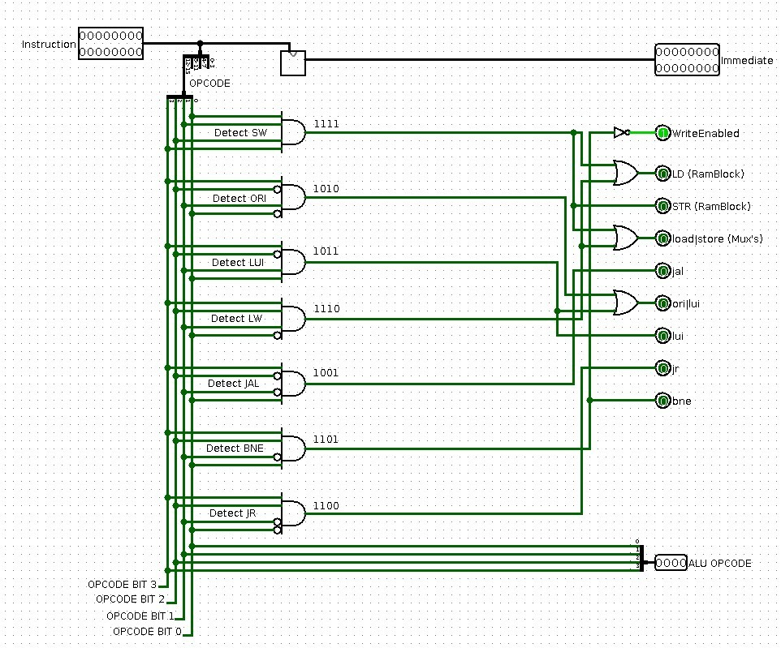
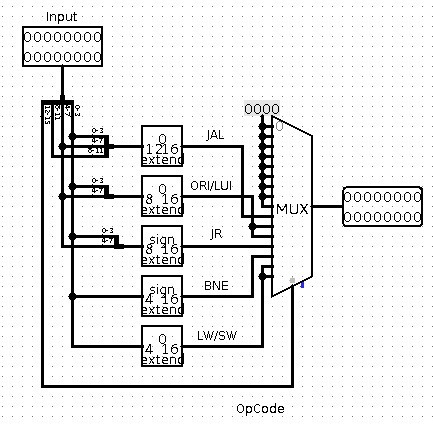

Het verschil met de vorige en de huidige program counter is dat we de Branch Value hebben losgekoppeld, aangezien deze waarde nu berekend zal worden door de instructie. Branch relative en absolute inputs zijn daarom ook dusdanig verdwenen aangezien deze afhankelijk zijn van welke instructie er plaats vindt. Branch Relative wordt nu bepaald door de 'branch not equal' (BNE) operatie (PC -> PC + 1 + imm) en Branch Absolute wordt nu bepaald door enerzijds de 'Jump And Link' (JAL) operatie (PC = target address) en anderzijds de 'Jump Register' (JR) operatie (Jump to address in register). De control unit is daarom zodanig ontworpen dat de multiplexers doorheen het datapad de juiste waarden aannemen om de bewerkingen op uit te voeren.
JAL
Wanneer er een JAL operatie plaats vindt, gaan we het huidige instruction adres+1 ( +1 want we willen met de volgende instructie verder gaan) opslaan in register 15 zodat we na een subroutine kunnen terugspringen naar de plaats waar deze opgeroepen zou zijn.
De immediate value wordt doorgegeven naar het instructieblok, aangezien deze verwijst naar waar we jumpen, en dus de volgende instructie bepaald. De control unit zorgt ervoor dat er in onze register file de waarde van de PC+1 in reg15 wordt geschreven door de desbetreffende control lines in te stellen.(WriteEnabled, reg 15 selected, ...)
ORI
Bij een ORI operatie gaan we de inhoud van het register met nummer $rs in een logische OR-gate sturen samen met de immediate value en dat opslaan in $rs. Onze control unit zorgt ervoor dat we kunnen lezen uit register $rs en dat de inhoud van dat register dan naar een OR-gate geleid wordt, samen met de immediate value.
LUI
De LUI operatie gaat in feite zijn immediate value met 8 bits naar links shiften en dat opslaan in register $rs. Hiervoor gebruiken we een simpele built-in shifter die 8x een 0 plaatst (langs rechts). Wederom zorgt de control unit ervoor dat de correcte waarden gebruikt worden.
ORI en LUI gebruiken voor een LI operatie
We kunnen ORI en LUI samen gebruiken om een load immediate operatie uit te voeren, waarbij de immediate 16 bits breed is. Indien we eerst de 8 most significant bits met een LUI operatie uitvoeren op bepaal register X, gevolgd door een ORI operatie met de 8 least significant bits op register X, dan zullen we in dat register de 16-bit value vinden die ontstaan is uit de immediate value van LUI en ORI operaties.
JR
De JR operatie zal ervoor zorgen dat we verder gaan met de instructie die we vinden op de plaats die bepaald wordt door de inhoud van $rs en de immediate value. De immediate value tellen we bij $rs op.
BNE
Bij de BNE operatie zullen we indien rs != rt springen naar het current adres + 1 + immediate value. Zo kunnen we dus bepaalde instructies overslaan indien de voorwaarde niet voldaan is. Indien deze wel gelijk zijn aan mekaar, zullen we gewoon verder gaan met de instructies, er zal geen adreswijziging plaatsvinden (buiten de gewoonlijke increment van de program counter).
Aanpassingen aan Control Unit en opstellen van Immediate Ciruit
We hebben onze Control Unit moeten uitbreiden voor control lines van de nieuwe instructies en hebben deze meteen ook geherstructureerd. Een screenshot kan U hieronder bezichtigen.

We hebben ook een nieuw circuit aangemaakt, een immdiate circuit, dat ervoor zorgt dat, afhankelijk van welke instructie er plaats vindt de juiste immediate value wordt teruggegeven. We kunnen zo 5 cases onderscheiden waarbij we 4,8 of 12 bits aan immediate value nodig hebben, al dan niet signed of unsigned. Dit is dus geabstraheerd en de output is de correcte immediate waarde. Hieronder een screenshot.

Project 7: Using the Datapath
Finding the smallest element in an array
Assembler Code
Om kleinste element in een array vinden moeten we beginnin met het beginadres van de array op te slaan. Daaruit vertrekken we onze reeks van vergelijkingen. We hebben de size van de array nodig om te weten wanneer we moeten stoppen met data te vergelijken. Telkens gaan we 2 elementen vergelijken waarvan we het kleinste eruit nemen en dat vergelijken met het tot dan nog toe kleinste element. Indien ons huidige waarde kleiner is overschrijven we het register dat de kleinste waarde houdt, indien niet, gaan we gewoon verder met onze vergelijkingen. Op het einde van de hele routine kunnen we het kleinste element vinden in het specifieke register. (We schrijven dit ook nog eens naar het datamem, vlak voor het begin van de array).
Creating the sequence of Lucas' Numbers
Assembler Code
Om de reeks van Lucas getallen te berekenen steken we de initiele waarde in het datamemory; de waarden 2 voor n=0 en de waarde 1 voor n=1. We laden deze waarden in en tellen ze op. Het resultaat steken we in een register dat geschreven zal worden op de locatie na de initiele waarden. Bij de volgende berekeningen zullen we telkens het proces van de vorige twee getallen optellen en schrijven naar het datamemory herhalen, maar telkens een plaatsje verder in ons datamemory gaan zodat we een mooie opeenvolgende reeks van Lucas' getallen krijgen.
Sorting an array
Assembler Code
voor dit programma gebruiken we het bubble sort algoritme. hierbij gaan we steeds alle getallen in een array afgaan en deze indien het tweede getal groter is dan het eerste verwisselen en terug schrijven. als we heel de array doorlopen zijn verklijnen we de size van de array met 1. en doen alles opnieuw tot de size gelijk wordt aan 0.